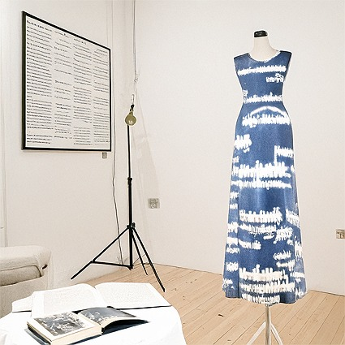

In our week 3 class, we prompted an AI image software to visualise our exhibition for us. I used Adobe Firefly, simply because I have it included in my Adobe subscription. This was my prompt:
A gallery space. a room with wooden floor and white walls. Filling the space is a table and a dress on a dress form. on the table there is an open book and behind the table there is a large screen. The screen and book show digital and analogue documentations of the dress. They are narrative driven; a film and a story. The dress is blue, with text printed in white across the fabric itself. it is made from layers of rayon and silk that have been dyed with cyanotype.
I noted down my immediate reactions to the visual that the AI created: "Really don't love this! I think because I didn't get to describe the atmosphere at all this was an issue. It has also made the ugliest looking dress ever ahaha...I have to be honest, I really did not enjoy this. It has produced such a bad version of my idea that it's made me feel demoralised. I appreciate using this as a visualisation tool early on, but I think for me it might be more effective at a late stage when I already know more about my idea and can prompt the AI better?"

make space!